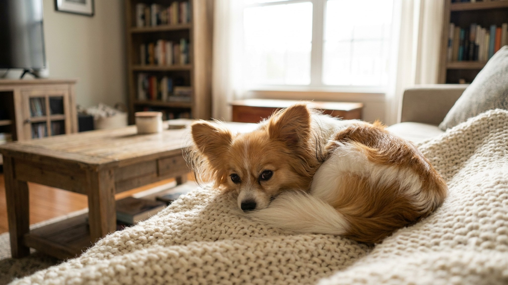

Весит 2–4 кг, но входит в топ-10 самых обучаемых пород в мире по классификации Стэнли Корена — наравне с лабрадорами и немецкими овчарками. Папийон запоминает новую команду за 5–15 повторений и выполняет её с первого раза в 85% случаев. Маленький размер обманывает: это не диванная игрушка, а рабочая голова в карманном формате.
🐾 Экономьте на лишних визитах к врачу
Сначала спросите AI-ветеринара в AnimaLife — часто этого достаточно, чтобы понять, нужен ли визит к врачу.
Папийон — континентальный той-спаниель. Название «papillon» (фр. «бабочка») отсылает к форме стоячих ушей с длинной бахромой: раскрытые и симметричные, они действительно напоминают крылья. Существует и второй вариант той же породы — фален («мотылёк»): у него уши висят, как у кокер-спаниеля. Разница только в ушах, темперамент и стандарт одинаковы.
Порода известна с XV века — её изображали на картинах европейских аристократов: Рубенс, Ван Дейк, Гойя. При дворах Людовика XIV и Марии Антуанетты папийоны жили как статусные компаньоны. Вес взрослой собаки — 2–5 кг, рост — до 28 см в холке. Телосложение крепкое для своего размера, несмотря на изящный вид.
Папийон — один из немногих той-форматов, которые всерьёз работают в аджилити, обидиенс и трюковой дрессировке. Если голова не занята, собака сама найдёт себе занятие — обычно шумное или разрушительное.
Короткие тренировки 10–15 минут в день — и папийон занят, доволен и управляем.
Папийон — собака-тень. Следует за хозяином из комнаты в комнату, хочет быть рядом постоянно. Это плюс для тех, кто много времени проводит дома, и минус, если собака часто остаётся одна.
Шерсть папийона шелковистая, длинная, без подшёрстка. Это означает: нет свалявшихся колтунов у корня, но расчёсывать нужно регулярно.
Папийон — порода для активного, внимательного хозяина. Если вы готовы вкладываться в дрессировку и общение, получите надёжного, умного и долгоживущего (14–16 лет) компаньона.
🐾 Всё о вашем питомце — в одном приложении
AI-ветеринар, дневник, напоминания о прививках и уходе. Установите AnimaLife — это бесплатно, в Telegram и MAX.
🐾 Понравился разбор?
Подпишитесь на канал — каждый день разбираем по одному тревожному симптому у кошек и собак: что в пределах нормы, а когда пора к врачу. Подпишитесь, чтобы не пропустить разбор, который может спасти здоровье вашего питомца.